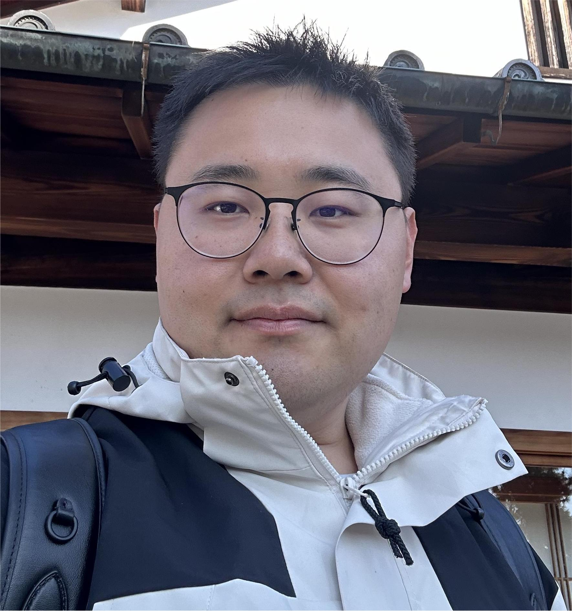
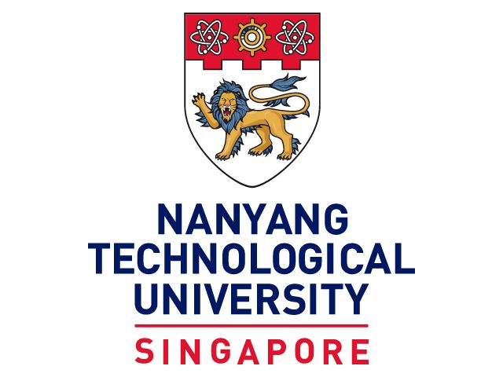
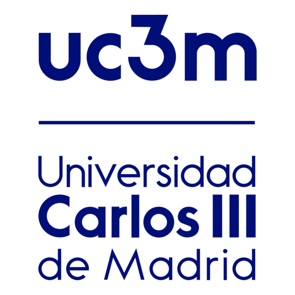
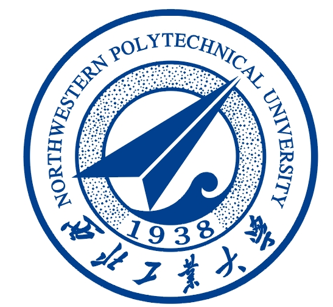

Research Fellow
Nanyang Technological University
ContactDigital Signal Processing Lab
School of Electrical and Electronic Engineering
Nanyang Technological University
50 Nanyang Avenue
Singapore 639798
Hosted on GitHub Pages

Research Fellow at the NTU Digital Signal Processing Lab, working at the intersection of artificial intelligence, acoustic signal processing, and noise reduction.

Nanyang Technological UniversityCurrent appointment
Universidad Carlos III de MadridVisiting research
Northwestern Polytechnical UniversityPh.D., M.Eng. & B.Eng.Qixiang Niu is currently a Research Fellow with the Digital Signal Processing Lab (NTU DSP Lab) at Nanyang Technological University (NTU), Singapore, working under the supervision of Prof. Woon-Seng Gan. His current research focuses on artificial intelligence (AI) for audio and active noise control (ANC).
He received his Ph.D. in Engineering from the School of Marine Science and Technology (SMST) at Northwestern Polytechnical University (NWPU) in March 2026, under the supervision of Prof. Qunfei Zhang and Prof. Wentao Shi. His doctoral research focused on integrated multistatic underwater acoustic detection and communication systems.
From September 2023 to August 2025, he was a visiting Ph.D. student with the Signal Processing Research Group in the Department of Signal Theory and Communications at Universidad Carlos III de Madrid (UC3M), Spain, under the supervision of Prof. David Ramírez. His visit was jointly funded by NWPU and the China Scholarship Council (CSC).
He received his B.Eng. degree in Information Engineering from NWPU in 2019 and his M.Eng. degree in Underwater Communication and Information Sensing from NWPU in March 2021. During the first year of his master's program, he was granted early admission to doctoral study.
His research interests include AI-based acoustic signal processing, active noise control, integrated systems for underwater detection and communication (ISUDC), integrated sensing and communication (ISAC), underwater acoustic waveform design, sparse channel estimation, direct-path interference suppression, multistatic target localization and information fusion, signal detection and recognition, and the Internet of Vehicles.